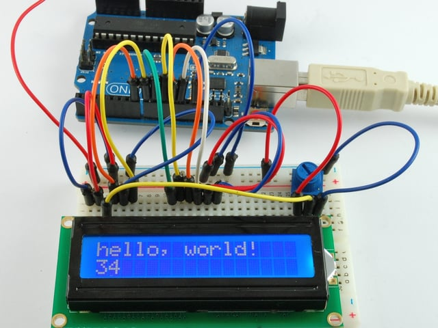
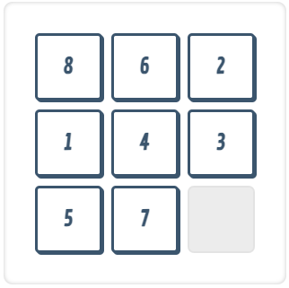
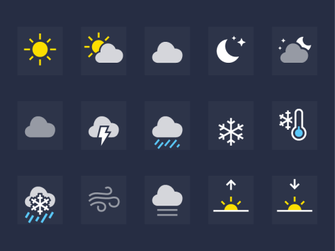
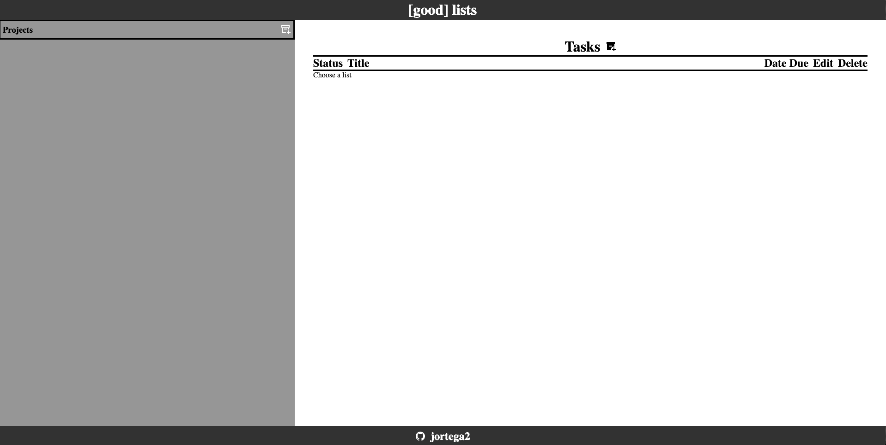

My Projects

RShell
A shell emulator that executes simple shell commands with connector support.
Created utilizing the shunting yard algorithm and system calls.
C++ Googletest Regex

Reaction Time Game
A game that measures reaction time using an atmega1284 microprocessor, AVR Studio 6, a breadboard,
synchronous state machines, a joystick, and a Nokia 5110 LCD screen for output.
C

8 puzzle solver
A console program that takes the starting state of an 8-puzzle game and outputs a
sequence of moves that lead to a solved state.
The program can use Uniform Cost Search or A* Search to solve the puzzle.
C++

Weather Webpage
Web page that displays the current weather and a five-day forecast
for a user-inputted location.
Project was created to practice using JavaScript promises.
JavaScript HTML CSS

To Do List
A webpage that allows the user to create various amounts of to-do lists and assign tasks to them.
JavaScript HTML CSS PubSub-js